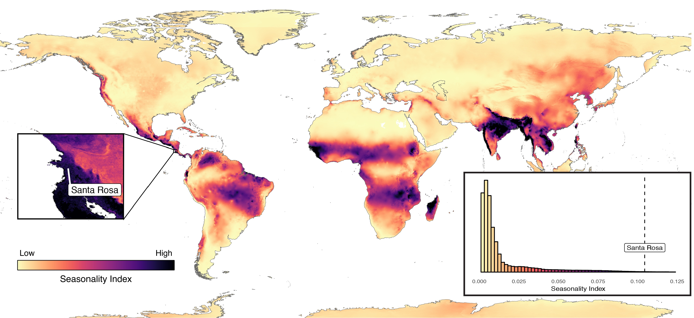

Climate Seasonality
Climate seasonality poses unique challenges to long-lived organisms in tropical dry forests: they must tolerate both long dry periods and long wet periods, and they must cope with the variable timing of transitions between wet and dry seasons. My colleagues and I have published studies that document how these challenges are met in a population of arboreal monkeys. These studies provided new insights into the strategies and behavioral tactics used by organisms to contend with periodic biophysical adversity.
Seasonality in the tropical dry forests of Costa Rica is exceptionally strong. Although the region receives about 1,700 mm of rain each year, the rainfall is almost entirely confined to a 5-6 month wet season with moderate temperatures and lush vegetation. By contrast, the dry season—with its high temperatures and extreme scarcity of surface water—can be a difficult time for the primates. To conserve water, most trees in the forest lose their leaves, exposing the monkeys to intense solar radiation.

I review these climatic processes in a book chapter: Campos (2018) Primate Life Histories, Sex Roles, and Adaptability - Essays in Honour of Linda M. Fedigan..
Behavioral Thermoregulation
My Master’s research examined the behavioral strategies that the capuchins use to cope with this extreme seasonality. I found that they reduce activity during the hottest hours of the day, and they concentrate their movements around the few remaining sources of surface water. They also extend their tongues in hot dry conditions, presumably to cool themselves via evaporation of saliva from the tongue.
Campos and Fedigan (2009) Am J Phys Anth.
Seasonal Changes in the Gut Microbiome
My collaborators Joseph Orkin and Amanda Melin at the University of Calgary are directing a study, on which I am collaborating, that aims to understand temporal variation in the composition of the capuchin gut microbiome, and how these changes are related to resource availability and rainfall patterns. New completed work in this area is currently in review.
Orkin et al. (2018) The ISME J.
Urine Washing
Some primates regularly wash their hands and feet with urine. This behavior is outwardly similar to scent marking in other mammals, but it differs in that the urine is applied to the bare skin of the hands and feet rather than rubbed into the fur or applied directly onto an object in the environment. Empirical evidence for the functional significance of urine-washing remains inconsistent. My Master’s research tested functional explanations for urine-washing in several groups of wild white-faced capuchins, building on earlier research in collaboration with Dr. Joseph Manson and Dr. Susan Perry at UCLA.